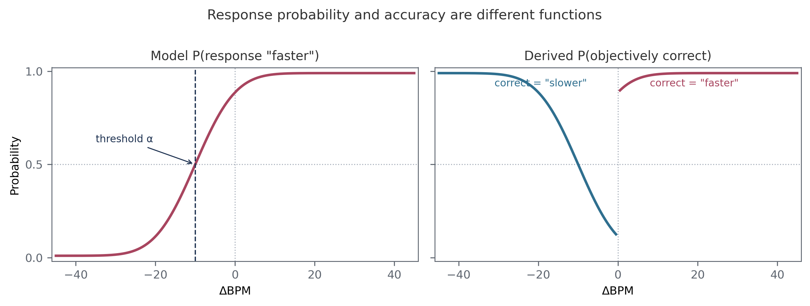
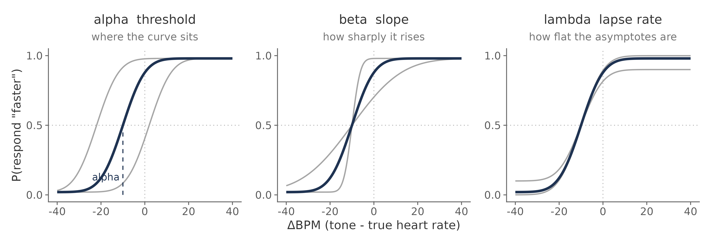
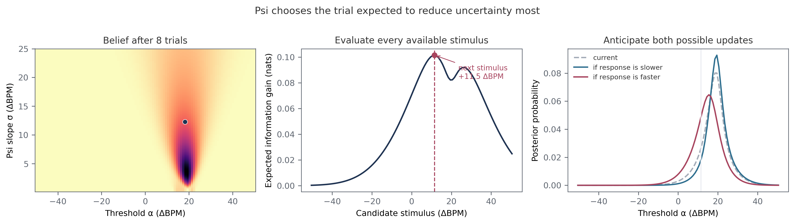
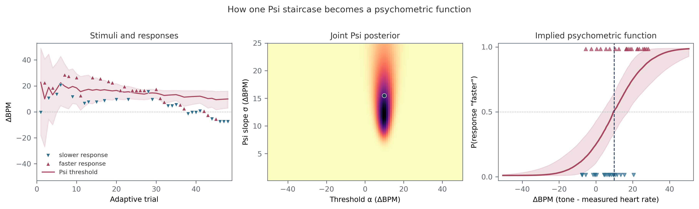
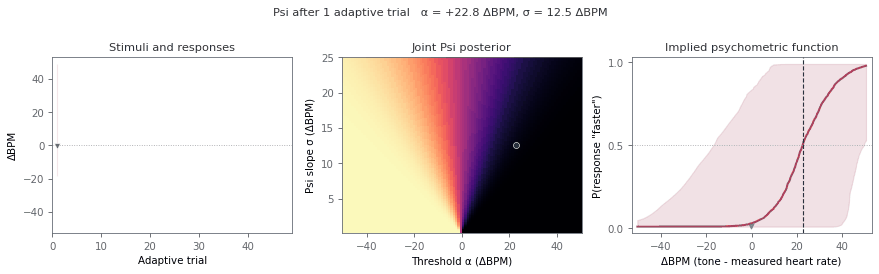
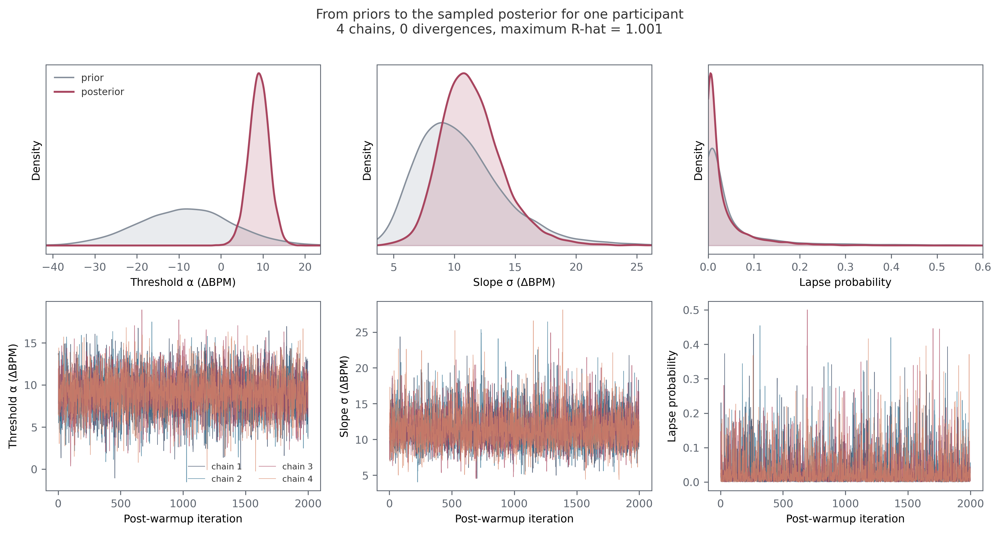
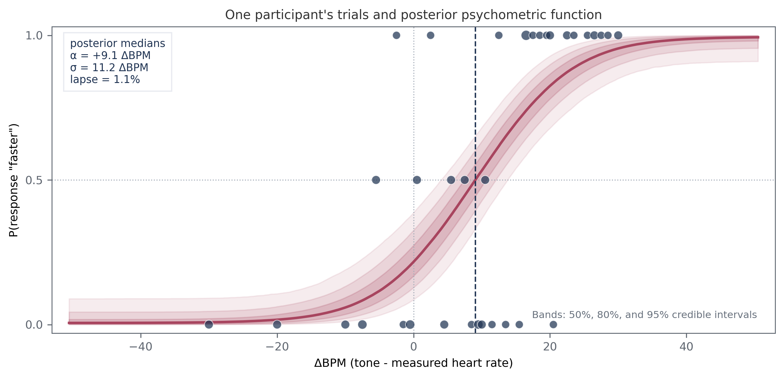

The psychophysical model#
Author: Micah G. Allen
The Heart Rate Discrimination task turns a simple judgement into a model of cardiac belief. A participant attends to their heart, hears a sequence of tones, and reports whether the tones were faster or slower. Across trials, we vary the difference between the tones and the measured heart rate. The pattern of responses tells us where the participant believes their heart rate lies and how precisely they can discriminate changes around that belief.
There are two Bayesian procedures in this workflow. Psi runs during the task and
chooses informative stimuli. We then refit the response model in brms, where
we can estimate lapse rate, use cleaned trials, and retain posterior uncertainty.
The two procedures use closely related psychometric functions, but they have
different jobs.
This tutorial is organized accordingly:
the measurement model and its psychological interpretation;
adaptive measurement with Psi;
a worked
brmsanalysis of one participant.
Begin with inspecting your results if you are working with your own data and have not yet checked missing responses or recording quality.
Part I. The measurement model#
A trial is a comparison#
For participant \(s\) on trial \(i\), define the stimulus intensity as
in ΔBPM. The reference is the measured heart rate in an interoceptive trial and the first tone sequence in an exteroceptive trial. A negative value means the comparison tones were slower than the reference; a positive value means they were faster.
The response is coded
The model concerns \(P(y=1)\), the probability of a “faster” response. It does not
model ResponseCorrect. This distinction is central to understanding the HRD.
Suppose a participant underestimates their heart rate by 10 BPM. Their responses will be divided equally between “faster” and “slower” when the tones are around \(-10\) ΔBPM. This is their subjective match even though the tones are objectively slower than the measured heart rate. Accuracy is therefore low near the participant’s subjective threshold and high for sufficiently extreme stimuli.

The left panel is the monotonic function fitted by the model. The right panel is what happens if those same responses are scored against the sign of ΔBPM. Correctness switches from a “slower” response to a “faster” response at zero, so it is not described by a single cumulative Gaussian. Fitting accuracy would answer a different question and would not recover the participant’s subjective heart-rate belief.
The psychometric function#
We use a cumulative Gaussian with a lapse component. Let \(\ell_s\) be the probability that participant \(s\) responds independently of the stimulus. The probability of a “faster” response is
and the observed response follows
\(\Phi\) is the standard normal cumulative distribution function. On a lapse trial, a random choice produces a “faster” response half the time. On the remaining trials, response probability follows the cumulative Gaussian.
The three parameters separate properties that would otherwise be confounded.
Parameter |
Scale |
Psychological interpretation |
|---|---|---|
\(\alpha\) |
ΔBPM |
Threshold, or point of subjective equality. It locates the participant’s bias. |
\(\beta\) |
log inverse-σ |
Slope. Larger values indicate a steeper transition and finer discrimination. |
\(\ell\) |
probability |
Lapse probability. It controls stimulus-independent responses and the asymptotes. |
At \(x=\alpha\), the argument of \(\Phi\) is zero and \(P(\text{"faster"})=0.5\), regardless of the lapse rate. In the interoceptive condition:
\(\alpha<0\) indicates underestimation of heart rate;
\(\alpha=0\) indicates little bias relative to the measured rate;
\(\alpha>0\) indicates overestimation.
The log-slope can be returned to ΔBPM by computing
\(\sigma\) is the standard deviation of the underlying Gaussian. Small values produce a sharp response transition; large values produce a gradual one. The slope at the threshold is
This expression makes the direction of \(\beta\) explicit: larger \(\beta\) means a steeper curve.

The dark curve is held fixed in each panel. Threshold moves the function horizontally, slope changes the width of its transition, and lapse rate pulls the lower and upper asymptotes towards 0.5.
Warning
The online Psi output and the model use different slope parameterizations.
PsychoPy’s Psi estimate is \(\sigma\), for which larger values mean poorer
discrimination. The offline brms model estimates \(\beta=-\log(\sigma)\), for
which larger values mean better discrimination. The slope reported in
Legrand et al. (2022) follows
the Psi convention.
What the parameters measure#
Threshold and slope describe judgements about heart rate. They should not be treated as pure measures of ascending cardiac afferent sensitivity. A participant may draw on cardiac sensations, somatic cues, prior beliefs about resting heart rate, temporal estimation, and memory for the listening interval.
The exteroceptive condition helps identify general temporal comparison biases, but it does not turn the interoceptive estimate into a process-pure measure. Interoceptive and exteroceptive trials differ in their reference signals, and the comparison between them should be stated at the level of the fitted parameters.
Threshold and slope must also be interpreted separately. A participant can hold a biased but precise cardiac belief, or an unbiased but imprecise one. Evidence for an effect on threshold is not evidence for an effect on discrimination precision.
Part II. Adaptive measurement with Psi#
The state of the staircase#
Psi maintains a joint probability distribution over possible thresholds and slopes. With the current Cardioception defaults, this grid covers:
Quantity |
Range |
Resolution |
|---|---|---|
stimulus \(x\) |
-50.5 to 50.5 ΔBPM |
1 ΔBPM |
threshold \(\alpha\) |
-50.5 to 50.5 ΔBPM |
1 ΔBPM |
Psi slope \(\sigma\) |
0.1 to 25 ΔBPM |
0.1 ΔBPM |
The online lapse fraction is fixed at 0.02. For a response-coded Yes/No Psi staircase, the function used online is
Cardioception delegates the grid update and stimulus selection to
PsychoPy’s PsiHandler.
The HRD trial contains two intervals, but expectedMin=0 selects PsychoPy’s
Yes/No form because the staircase models which response was made. An
accuracy-coded 2AFC function would instead have a lower asymptote of 0.5 and
would not describe the point of subjective equality.
Interoceptive and exteroceptive conditions have separate grids because their thresholds and slopes may differ. Optional catch trials present predetermined extreme intensities and do not update either grid.
Choosing the next stimulus#
After \(t\) adaptive trials, let \(q_t(\alpha,\sigma)\) denote the current joint posterior. Psi considers every intensity the task can present. For each candidate \(x\), it asks how the posterior would change after either possible response and computes the expected remaining entropy:
The next intensity is the one that minimizes this quantity:
After the participant responds, Bayes’ rule updates the grid:
The figure below applies this calculation to the example session bundled with Cardioception. After eight trials, uncertainty remains about both threshold and slope. Psi evaluates the expected information gain at every available ΔBPM. It selects \(+11.5\) ΔBPM, having averaged over the posterior that would follow a “slower” response and the posterior that would follow a “faster” response.

This is more efficient than drawing intensities uniformly. Trials are allocated where they are expected to distinguish plausible psychometric functions. Some will fall near the current threshold estimate; others are placed away from it because the tails carry information about slope. An efficient Psi trace does not have to settle into a flat line.
From the trace to the function#
The next figure follows the layout of Fig. 1 in the original HRD methods paper. It uses a complete session shipped with this repository. Triangles in the left panel show the selected intensities and responses. The red line and band show the evolving marginal posterior for the threshold. The middle panel retains the joint uncertainty in threshold and slope. The right panel maps that posterior through the psychometric function.

At the end of this session the online posterior is centred near \(\alpha=+9.9\) ΔBPM and \(\sigma=15.5\) ΔBPM. These are summaries of a distribution, not parameters read directly from the visual trace. The trace contains many stimuli below the final threshold because those trials helped the algorithm learn the response transition.
The animation shows the same calculation after every adaptive trial. The broad initial family of plausible functions contracts as responses accumulate. An unexpected response can widen or move the posterior temporarily, which is an appropriate revision of uncertainty rather than a failure to converge.

The example also contains catch trials, but they are omitted here because they
do not update Psi. The figure and animation can be regenerated with
python tutorials/plot_psi_adaptation.py.
What Psi gives us#
Adaptive measurement has three practical advantages:
it estimates threshold and slope jointly;
it spends fewer trials on stimuli that are predictable under every plausible function;
it produces a running posterior that can be inspected for range problems and poor identification.
The online estimates remain part of the experimental procedure. They answer “which stimulus should be presented next?” very well. They are not the analysis we want to report.
Part III. Fitting one participant in brms#
We use one participant here because it keeps the connection between trials, parameters, and the fitted curve visible. This is a complete descriptive model for that session. Questions about a sample, a condition effect, or a group difference require the model in the next tutorial.
Why refit the trials#
EstimatedThreshold and EstimatedSlope summarize the online Psi grid. They
are useful for checking that a session ran as expected. The offline fit gives us
several things that the staircase was not designed to provide:
the lapse rate is estimated rather than fixed at 0.02;
planned trial exclusions can be applied before fitting;
the parameters are no longer restricted to the Psi grid;
uncertainty is carried through to the fitted function and every summary.
The presented intensities remain valid observations. Conditional on an intensity, the likelihood of the response has the same form whether Psi chose that intensity or it was fixed in advance. We therefore retain the actual intensities and responses, apply the data-quality criteria, and fit them again.
Prepare the participant’s responses#
The example below reads the session distributed with Cardioception. It has 58 usable interoceptive trials at 34 exact intensities. Catch trials did not update Psi, but they are valid observations of the response function and can be included if they pass the same quality checks as the other trials.
library(brms)
library(dplyr)
library(readr)
raw <- read_csv(
"docs/source/examples/templates/data/HRD/HRD_final.txt",
show_col_types = FALSE
)
trials <- raw |>
filter(
Modality == "Intero",
Decision %in% c("More", "Less"),
!is.na(Alpha)
) |>
mutate(
x = Alpha,
resp = as.integer(Decision == "More")
)
model_df <- trials |>
group_by(x) |>
summarise(
y = sum(resp),
n = dplyr::n(),
.groups = "drop"
)
stopifnot(
all(model_df$y >= 0),
all(model_df$y <= model_df$n),
all(model_df$n >= 1)
)
y counts “faster” responses. Its proportion should generally increase with
x; a decreasing pattern is a cue to check the response coding. Exact repeats
are combined as
\(Y_x\sim\operatorname{Binomial}(n_x,p_x)\). Nearby intensities are left
separate because arbitrary bins discard information.
Define the response model#
For this one participant, each nonlinear parameter needs only an intercept:
inv_logit <- function(x) 1 / (1 + exp(-x))
erf <- function(x) 2 * pnorm(x * sqrt(2)) - 1
bff <- bf(
y | trials(n) ~ inv_logit(lambda) / 2 +
(1 - inv_logit(lambda)) *
(0.5 + 0.5 * erf(exp(beta) * (x - alpha) / sqrt(2))),
alpha ~ 1,
beta ~ 1,
lambda ~ 1,
nl = TRUE,
family = binomial(link = "identity")
)
The erf() expression is the cumulative Gaussian from Part I. Stan provides
erf() during sampling, while the short R definition lets brms evaluate the
same expression when making predictions. The nonlinear formula already returns
a probability, so the binomial family uses an identity link.
Specify and inspect the priors#
These priors come from the normative HRD refit reported by Courtin et al. (2026):
priors <- c(
set_prior(
"normal(-8.67, 11.23)",
class = "b", nlpar = "alpha", coef = "Intercept"
),
set_prior(
"normal(-2.3, 0.34)",
class = "b", nlpar = "beta", coef = "Intercept"
),
set_prior(
"normal(-4.32, 1.96)",
class = "b", nlpar = "lambda", coef = "Intercept"
)
)
The threshold prior is centred at \(-8.67\) ΔBPM. The prior mean of \(-2.3\) for log inverse-\(\sigma\) corresponds to \(\sigma\approx10\) ΔBPM. The logit-lapse prior is centred at a lapse probability of about 1.3%. Check that the names match the coefficients generated by the formula:
get_prior(bff, data = model_df)
A coefficient name in a nonlinear model is easy to mistype, which can leave an unintended flat prior. Before seeing the responses, sample from the prior and draw the implied psychometric curves across the task range:
prior_fit <- brm(
bff,
data = model_df,
prior = priors,
sample_prior = "only",
chains = 4,
cores = 4,
iter = 2000,
backend = "cmdstanr",
seed = 5101,
file = "fits/hrd_single_prior"
)
grid <- data.frame(x = seq(-50.5, 50.5, length.out = 200), n = 1)
prior_curves <- posterior_epred(prior_fit, newdata = grid)
matplot(
grid$x, t(prior_curves[1:100, ]), type = "l",
lty = 1, col = rgb(0.3, 0.35, 0.4, 0.12),
xlab = "ΔBPM", ylab = "P(response 'faster')"
)
This check is more informative than inspecting three prior densities in isolation. It shows whether their combination assigns probability to plausible response curves over the intensities the participant could encounter.
Sample the posterior#
Bayesian fitting combines the parameter priors with the likelihood of the 58 responses:
We use four independent chains to explore this posterior. sample_prior = "yes" also stores draws from the priors, which makes a direct comparison with
the posterior possible.
fit <- brm(
bff,
data = model_df,
prior = priors,
sample_prior = "yes",
chains = 4,
cores = 4,
warmup = 1000,
iter = 3000,
control = list(adapt_delta = 0.95, max_treedepth = 12),
backend = "cmdstanr",
seed = 5102,
file = "fits/hrd_single",
file_refit = "on_change"
)
The upper row below compares marginal prior draws with posterior draws from this fit. The participant’s responses move the threshold well away from the prior centre and narrow it substantially. The width is also learned from the data. Lapse remains less certain because very low lapse rates make similar predictions in a session of this length.
The lower row shows post-warmup draws in sampling order. These traces are a computational diagnostic, not a record of how the participant learned during the task. All four chains should explore the same region without trends or long periods of sticking.

The cached brms object can be large. Keep it out of version control. The script
used for this example, including its cache and compact output tables, is
tutorials/R/05_single_subject.R.
Check the sampling#
Read the diagnostics before interpreting the curve:
np <- nuts_params(fit)
draw_summary <- posterior::summarise_draws(
posterior::as_draws_array(fit)
)
sum(np$Value[np$Parameter == "divergent__"])
max(np$Value[np$Parameter == "treedepth__"])
max(draw_summary$rhat, na.rm = TRUE)
min(draw_summary$ess_bulk, na.rm = TRUE)
min(draw_summary$ess_tail, na.rm = TRUE)
For this fit there were no divergent transitions, maximum tree depth was 4, maximum \(\widehat{R}\) was 1.001, and the minimum bulk and tail effective sample sizes were 3,309 and 4,266. Minimum E-BFMI across chains was 1.00. These values give no indication of a sampling problem. As general checks, require no divergences, \(\widehat{R}<1.01\), effective sample sizes in at least the hundreds, and E-BFMI above 0.3.
Plot the fitted participant#
We now carry each posterior draw through the psychometric function. At every value of ΔBPM this gives a distribution of response probabilities, from which we can plot a median and credible bands.
grid <- data.frame(x = seq(-50.5, 50.5, by = 0.25), n = 1)
p_draws <- posterior_epred(fit, newdata = grid)
curve <- tibble(
x = grid$x,
q2.5 = apply(p_draws, 2, quantile, 0.025),
q10 = apply(p_draws, 2, quantile, 0.10),
q25 = apply(p_draws, 2, quantile, 0.25),
median = apply(p_draws, 2, median),
q75 = apply(p_draws, 2, quantile, 0.75),
q90 = apply(p_draws, 2, quantile, 0.90),
q97.5 = apply(p_draws, 2, quantile, 0.975)
)

Each point is the observed proportion of “faster” responses at one exact intensity; larger points represent repeated presentations. The line is the posterior median function. The nested bands contain 50%, 80%, and 95% of the posterior probability at each intensity. The vertical dashed line marks the median threshold.
This participant’s threshold is \(+9.1\) ΔBPM, with a 95% credible interval from \(+4.0\) to \(+13.8\) ΔBPM. Their tones had to be about 9 BPM faster than the measured heart rate before “faster” and “slower” responses were equally likely, which indicates overestimation relative to the measured rate. The median \(\sigma\) is 11.2 ΔBPM, with a 95% interval from 7.3 to 17.3 ΔBPM. The median lapse probability is 1.1%, although its 95% interval is broad, from 0.03% to 17.9%. The posterior bands make that remaining uncertainty visible in a way that the final Psi point estimates cannot.
Return to scientific scales#
Transform slope and lapse draws before reporting them:
draws <- posterior::as_draws_df(fit) |>
as.data.frame() |>
transmute(
threshold_dBPM = b_alpha_Intercept,
log_slope = b_beta_Intercept,
sigma_dBPM = exp(-b_beta_Intercept),
lapse_probability = plogis(b_lambda_Intercept)
)
draws |>
tidyr::pivot_longer(
everything(), names_to = "parameter", values_to = "value"
) |>
group_by(parameter) |>
summarise(
median = median(value),
q2.5 = quantile(value, 0.025),
q97.5 = quantile(value, 0.975),
.groups = "drop"
)
Where the single-participant analysis ends#
This fit is useful for understanding the model, describing an individual session, and diagnosing whether the response function is identified. It is not a route to a group analysis. Fitting every participant separately and testing their posterior means would discard their different levels of uncertainty.
Continue to hierarchical modelling when the scientific question concerns participants as a sample, experimental conditions, groups, or covariates. That tutorial starts from the same trial likelihood and develops the population model in full.